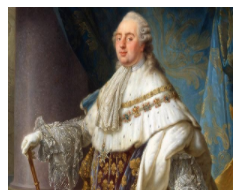

Capítulo 1: Estudo sobre a sociedade, as novas práticas e costumes e a relação destes com a renovação da vida material.
As sociedades humanas têm passando por processos contínuos de mudança nas suas formas de relacionar-se com o mundo, expressando através de suas crenças, hábitos, costumes e vida material, muito a respeito do juízo que fazem de si e dos demais. Neste sentido, quando abordamos o passado de um povo vemos que muito do que existe no presente carrega consigo algum tipo de relação com outros tempos. Porém, o ritmo com que as novas tecnologias impactam os mais variados setores da vida nas cidades impõe outras formas de expressão passíveis de serem observadas no dia-a-dia das pessoas, na forma como estabelecem os padrões de conduta a serem seguidos ou mesmo na atribuição de valor que dão a determinados locais, práticas ou situações cotidianas. Como você percebe estas questões no seu dia a dia?
Contextualizando – Indústria Metalúrgica e Mineração no Brasil Colonial
O período 1700-1800 é denominado pela mudança do eixo da vida brasileira: a mineração provoca uma. corrente migratória para o interior e, talvez, por isso, a manifestação primeira de uma cultura brasileira que inclui arquitetura, pintura, música, literatura e, até mesmo, identidade política expressa pela Inconfidência Mineira. A capital brasileira passa de Salvador para o Rio de Janeiro, e o papel dessas duas cidades, como paradas obrigatórias das rotas dos Mares do Sul, desenvolve uma indústria naval importante, com estaleiros que podem ter tido fundições de bronze, segundo vagas informações.
A metalurgia do ouro nesse período era rudimentar. As Casas de Fundição de Minas realizavam um refino do ouro por amalgamação com mercúrio mas, no século XIX, Eschwege critica as imperfeições e o baixo rendimento do refino.
A metalurgia do ferro desse período é pouco documentada e parece ter sido marcada pelo aproveitamento dos conhecimentos africanos de extração do ferro. A mineração exigia artefatos de ferro, o minério era abundante e as culturas africanas já dominavam uma técnica rudimentar, porém eficaz, de extração de ferro, e as dificuldades de transporte de matéria-prima até a região mineira concorrem para justificar as afirmações de autores do século XIX, de que as "forjas de cadinho", operadas por escravos negros, estavam bastante disseminadas por Minas Gerais. As tais dificuldades de transporte incluíam, por exemplo, o corte dos lingotes nos portos brasileiros, para que fosse possível distribuir a carga no lombo dos burros que subiam as serras em direção a Minas Gerais.
O governo da Província de São Paulo fez nova tentativa de instalar agora uma "fábrica de ferro", em Sorocaba, dirigida por Domingos Ferreira, utilizando forno "biscainho", tipo Stuckofen, podendo produzir ferro coado (gusa) ou ferro maleável. Os trabalhos transcorreram de 1765 a 1772 e ao final do período o governador Luiz Antonio relatava a El-Rei que "um hábil escravo africano ali engajado, principiando a trabalhar com o mestre, tira melhores fundições quando a governa" .
Fonte: http://www.pmt.usp.br/notas/notas.htm
Ao abordarmos o passado podemos constatar diferentes momentos em que as mudanças nas práticas e no comportamento das pessoas foram bastante significativas, fazendo com que antigos padrões da cultura fossem modificados por elementos novos advindos do contato com outras culturas ou ainda sendo modificados devido às transformações conjunturais ocorridas dentro da própria sociedade em questão.
(Re)construindo conhecimentos
No século XVIII, a Revolução Francesa rompeu com uma série de estruturas arraigadas na sociedade e na política do período, dando início a um novo modelo de sociedade bastante diferente daquela conhecida no antigo regime. A sociedade francesa da época estava divida em diferentes ordens, também chamados de estados, da seguinte maneira:
http://www.infohistoria.com.br/news/revolu%C3%A7%C3%A3o-francesa/
A crise do antigo regime teve início devido a uma série de fatores, entre eles podemos citar a crise agrícola por que passava a França naquele período, e consequentemente a insatisfação da população que cada vez mais se via reduzida a miséria, os gastos militares nas guerras em que o país via-se envolvido, o sistema tributário, o absolutismo do rei e a desigualdade social, bem como a difusão das ideias de liberdade e igualdade veiculadas ao movimento iluminista.
Nesta época reinava na França Luz XVI, que relutava em abrir mão dos privilégios da nobreza, indispondo-se com a burguesia em ascensão. A fim de resolver a crise por que passava o seu reino, ele convoca a Assembleia dos Estados Gerais, para que se chegasse a um consenso em relação aos rumos da política no país. Isto efetivamente não aconteceu, pelo contrário, as desavenças entre os estados levaram a as ruas os revolucionários que clamavam por mudanças.
Quem é?
 Luís XVI foi rei da França entre 10 de maio de 1774 e 21 de setembro de 1792. Foi destituído durante a Revolução Francesa e mais tarde decapitado por decisão das autoridades do regime revolucionário. Nasceu em Versalhes em 23 de agosto de 1754, era neto de Luís XV. A morte de seus dois irmãos mais velhos e de seu pai, único filho de Luís XV, converteu o jovem príncipe no príncipe herdeiro da França. Em 1770 casou com Maria Antonieta, a filha mais nova da arquiduquesa Maria Teresa da Áustria. Quando Luís subiu ao trono, o país estava empobrecido e endividado e os elevados impostos haviam estendido a miséria entre o povo francês.
Neste interim, o terceiro estado convoca uma Assembleia Nacional Constituinte. Entre as maiores realizações da assembleia de 1789 está a Declaração dos Direitos do Homem e do Cidadão que, entre outras coisas afirmava o fim dos privilégios feudais, a igualdade de todos diante da lei, o fim dos privilégios de nascimento, a liberdade de pensamento e opinião, e a garantia da propriedade individual. Este foi um dos primeiros passos para que em setembro do ano de 1792 fosse proclamada a república na França. Alguns meses depois Luís XVI foi julgado e guilhotinado em janeiro do ano de 1793.
Durante a Revolução Francesa houve mudanças, não só no cenário político, mas em todos os setores da sociedade. O fim dos privilégios do clero e a instauração de um Estado laico deu início à reformulação de muitas práticas até então bastante comuns não só na França, mas na Europa ocidental como um todo. Um exemplo disto é o caso da mudança do calendário gregoriano para um calendário revolucionário, onde as referências religiosas foram eliminadas dando lugar ao racionalismo e ao pensamento burguês. O ano um passou a ser 1792, em alusão a proclamação da república, Os meses passaram a ter três semanas e as semanas tinham 10 dias. Domingos e feriados cristãos foram retirados do calendário e os meses foram renomeados e os cinco dias (seis nos anos bissextos), que sobravam no final do ano passaram a ser feriados nacionais.
Com a ascensão de Napoleão Bonaparte ao poder, inicia-se um período de tensão no cenário geopolítico europeu. Em poucos anos a França expandiu seu território através da guerra e da invasão de outros Estados, inclusive sobre Portugal, o que ocasionou a vinda da família real para o Brasil. O período da história do Brasil conhecido como Joanino, estende-se do ano de 1808 ao ano de 1821, época em que o príncipe regente e depois rei Dom João VI governou seu reino a partir das terras brasileiras.
Desde a vinda da família real portuguesa para o Brasil no ano de 1808, até o ano de 1889 quando foi proclamada a república pelo Marechal Deodoro da Fonseca, estiveram no poder após o retorno de Dom João VI para Portugal, o seu filho Dom Pedro I, que proclamou a independência do Brasil do Reino Unido de Portugal, Brasil e Algarves no ano de 1822, governado o Império do Brasil até o ano de 1831, quando abdicou do trono em favor do seu filho Dom Pedro II, que na época tinha apenas cinco anos.
Dom Pedro II tornou-se conhecido por ser um amante da cultura, das letras e das ciências. Viajou por vários países da Europa, pelo oriente médio, Egito e América do Norte. Durante o seu governo o Brasil se modernizou em vários aspectos, mas a maior mudança no período em que esteve no poder mexe com a própria ordem social do país, trata-se da abolição da escravidão.
Desde os primórdios da colonização até o ano de 1888 quando foi sancionada a Lei Áurea pela princesa Isabel, o escravidão foi uma instituição comum no Brasil. No século XIX, a Lei Eusébio de Queirós (1950), proibindo a entrada do tráfico humano de africanos para o Brasil, a Lei do Ventre Livre (1871) que considerava livre os filhos de mulheres escravas nascidos a partir da data de sua promulgação, e a Lei dos Sexagenários (1885), que garantia liberdade aos escravos com mais de 60 anos de idade, foram algumas das medidas tomadas em direção a mudança de atitude em relação a mão de obra escrava no país.
Outra grande mudança deu-se no fim do período e está relacionada a mudança na forma de governo. O Brasil independente que desde a sua criação viveu sob a monarquia sofreu uma transição abrupta com a passagem para o regime republicano. No dia quinze de novembro de1889 o Marechal Deodoro da Fonseca juntamente com os seus correligionários militares e civis proclama a república e no dia seguinte Dom Pedro II é comunicado que deveria sair com sua família do país.
Você sabia?
Descubra qual é a diferença entre república e monarquia
A monarquia é um sistema de governo em que o monarca, caracterizado pela figura do rei, governa um país como chefe de Estado. Ela é a mais antiga forma de governo ainda em vigor. A monarquia pode ser constitucional, apresentando uma forma democrática de Estado, com regras constitucionais que decorrem de acordo com essa característica. Nesse sistema de governo existe uma figura, eleita pelo povo, classificado como primeiro-ministro cujas ações são fiscalizadas por um parlamento. Pode se uma monarquia absoluta, onde o rei figura como o chefe supremo da nação. Ele é responsável por exercer o poder executivo e legislativo, sem qualquer tipo de fiscalização. Ele aparece como o principal responsável pelo destino do povo. Ou pode ser ainda uma monarquia eletiva, sendo que neste caso, temos apenas uma nação que figura com este regime administrativo, a cidade do Vaticano. Lá, o Papa o líder supremo, eleito como chefe de governo.
A república é uma forma de governo que o Chefe de Estado é eleito pelos representantes dos cidadãos ou pelos próprios cidadãos. Ele exerce a função de governar a nação durante um tempo limitado. Uma das características mais importantes da República é a vertente eleitoral do presidente. O presidente está subordinação a leis fundamentais e à constituição. Essas ferramentas servem de norte para a existência de um estado organizado. Na república, dependendo da forma com que as decisões por parte do presidente sejam tomadas, o presidente pode ser afastado das suas atribuições de forma definitiva, por meio de impeachment.
Adaptado de: http://www.estudopratico.com.br/descubra-qual-e-a-diferenca-entre-republica-e-monarquia/
A mudança da forma de governo veio acompanhada de mudanças estruturais que reorganizaram o cenário político do país. Houveram também mudanças em alguns aspectos mais simbólicos como é o caso dos nomes de ruas e praças que passaram a ter o nome dos personagens que se destacaram em favor da causa republicana. Estatuas e bustos foram feitos e colocados nos locais públicos e mesmo a estatuária que servia de enfeite aos prédios públicos em muitos casos passou a ser adornada com motivos republicanos.
Outro ponto da mudança tem relação com as datas nacionais. Buscou-se no passado os momentos decisivos possíveis de serem relacionados com o universo republicano. No Rio Grande do Sul, por exemplo, a Guerra dos Farroupilhas contra o Império do Brasil (1835-1845), passou a servir como local de identificação contra o que se considerava serem os abusos do império. Da mesma forma, buscou-se na figura de Joaquim José da Silva Xavier, o Tiradentes a figura do mártir que morreu em nome de um ideal expresso através da Conjuração Mineira contra a coroa portuguesa, desmantelada no ano de 1789. No imaginário republicano, Tiradentes passou a ser visto e representado como um Cristo que morre em nome da justiça e da liberdade, comemorado através do feriado do dia 21 de abril, data da sua execução.
Ação e reflexão
Faça uma pesquisa e desenvolva um texto a respeito da cidade onde você mora, destacando se existe ou não alguma referência sobre a república nas ruas, praças ou monumentos. Aproveite para questionar alguns familiares ou moradores da cidade a respeito destes nomes e das coisas que você aprende neste capítulo do livro.
O que aprendi
Neste capítulo do livro aprendemos sobre as sociedades passam por processos contínuos de mudança e que estas se dão nos mais variados âmbitos da vida das pessoas.
A vinda da família real portuguesa para o Brasil no ano de 1808, que na época era uma colônia de Portugal, deu-se em virtude do processo de expansão das tropas napoleônicas pelo continente europeu a partir do ano de 1805. Com a corte portuguesa vieram os hábitos e costumes típicos da vida europeia, transformando a vida material e as práticas dos brasileiros do período.
Napoleão Bonaparte chegou ao poder após a Revolução Francesa de 1789, revolução essa que alterou a forma de governo do país que passou de uma monarquia para uma república. O período que antecede a revolução é chamado pela historiografia de crise do antigo regime, em alusão as dificuldades políticas, sociais e econômicas por que passava o país. Com a retirada de Luís XVI do trono e a sua execução aconteceram mudanças, não só no cenário político, mas em todos os setores da sociedade, inclusive na própria cultura, como é o caso da abolição do calendário gregoriano e das datas de celebração religiosa que foram substituídos pelo calendário republicano revolucionário com os meses inspirados nas estações do ano e as suas características e a instituição das datas cívicas alusivas ao povo e a república.
O período em que o Rei Dom João VI governou o seu reino a partir do Brasil entrou para a história com o nome de Joanino. Após o seu retorno a Portugal, seu filho Dom Pedro I proclamou a independência do Brasil, no ano de 1822. A ele seguiu como imperador do país o seu filho Dom Pedro II que foi destronado no ano de 1889 quando foi proclamada a república no país.
No período em que Dom Pedro II esteve no poder ocorreram uma série de transformações no Brasil, sendo a mais significativa a abolição da escravidão.